Lorsqu'elle apprend que son père ne lui a laissé pour seul héritage qu'un vieux manoir abandonné dans l'état du Maine, Catherine « Carrigan » Crittenden est furieuse. Cependant, elle se ravise lorsqu'elle apprend l'existence d'un trésor caché quelque part dans la demeure. Or celle-ci s'avère être hantée par de nombreux fantômes qui la repoussent sans scrupule.
Rebroussant chemin, elle engage James Harvey, un parapsychologue, afin de se débarrasser des revenants. Ce dernier s'installe au cœur du manoir avec sa fille Kathleen « Kat », qui fait bientôt la connaissance de Casper, un jeune fantôme. Celui-ci occupe la bâtisse en compagnie de ses trois oncles.


Casper’s Family
Les trois fantômes sont les oncles adoptifs de Casper le fantôme. Que ce soit dans le film ou dans la série de dessins animés, ils amusant à effrayer les gens qu'ils rencontrent et s’éclatent dans le château Whipstaff. Ils traitent cependant Casper assez mal .AU fils du temps les oncles changent cependant d’attitude et sont beaucoup plus affectueux avec Casper.
Stinkie : Il est le plus sensible et le moins arrogante des trois. Il a un corps mince, une face plus trapu par rapport à celle du ressort et deux dents proéminentes saillantes, similaires à celles de pippo. Son souffle vert et le mauvais est si lourd qu'il est presque les gens.
Fatso : Il est le plus gai et le soulagement comédie, même si il n’est pas très intelligence. Il a l'apparence d'une personne obèse mais malgré son apparence, il a la même agilité de ses compagnons. L'une de sa plaisanterie récurrente est « Où est le dîner? Ils sont transparents avec la faim. »
teigneux : Il est à peu près le leader du trio et s’amuse à utiliser Casper comme un jouet ; il ne supporte pas quand il est sympathique. Souvent, il travaille dur à désorienter les humains . Il est physiquement le plus mince des trois, est insensible et a un fort temperament (au moins au début), il est part la suite devenue plus sympathique.
Casper est en fait le fantôme d'un petit garçon mort d'une pneumonie On ne parle pas souvent du passé du petit revenant, mais il est en fait le fantôme d’un petit garçon nommé Casper McFadden dont la mère est morte en lui donnant naissance. Il a vécu avec son père jusqu’à ses 12 ans, puis a chopé une pneumonie en faisant de la luge et il est mort. Ne voulant pas laisser son père tout seul, il a décidé de rester sous la forme de fantôme. C’est bien triste, hein ?
Vite ! choisissez un chiffre entre 1 et 4
Quel fantôme êtes vous ?